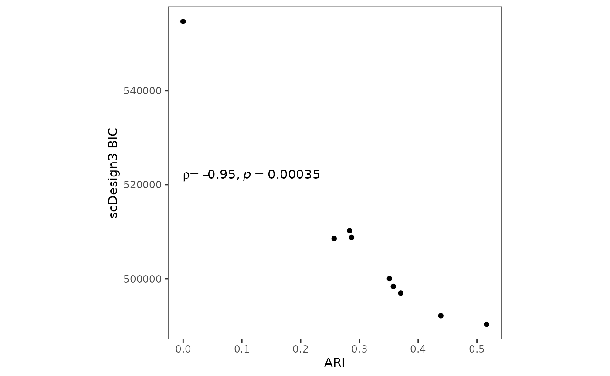

Evaluate clustering goodness-of-fit by scDesign3
Dongyuan Song
Bioinformatics IDP, University of California, Los Angelesdongyuansong@ucla.edu
Qingyang Wang
Department of Statistics, University of California, Los Angelesqw802@g.ucla.edu
15 July 2023
Source:../../scDesign3/code/vignettes/scDesign3-clusterGOF-vignette.Rmd
scDesign3-clusterGOF-vignette.Rmd
library(scDesign3)
library(DuoClustering2018)
library(dplyr)
library(scran)
library(aricode)
library(ggplot2)
theme_set(theme_bw())Introduction
In this tutorial, we will show how to use scDesign3 to evaluate the clustering goodness-of-fit for different cell-type assignments. If the true labels are unavailable and we have little prior knowledge, the scDesign3 BIC can serve as an unsupervised metric.
Read in the reference data
The raw data is from the R package DuoClustering2018 which contain a set of datasets with various clustering results.
Zhengmix4eq_sce <- get("sce_filteredExpr10_Zhengmix4eq")(metadata = FALSE)
res <- get("clustering_summary_filteredExpr10_Zhengmix4eq_v1")(metadata = FALSE)
res_sub <- res %>% dplyr::filter(method %in% c("SC3", "Seurat", "PCAHC", "PCAKmeans", "CIDR") & run == 1)
res_sub_list <- res_sub %>% group_by(dataset, method, run, k, resolution) %>% group_split()For demonstration purpose, we use the Zhengmix4eq dataset in the package with top 100 highly variable genes and the corresponding k-means clustering results with k = \(2 ,\cdots, 10\).
kmeans_res <- Filter(function(x){all(x$method == "PCAKmeans")}, res_sub_list)
ncell <- ncol(Zhengmix4eq_sce)
ngene <- 100
zheng_sce <- modelGeneVar(Zhengmix4eq_sce)
chosen <- getTopHVGs(zheng_sce, n = ngene)
sce <- Zhengmix4eq_sce[chosen, ]
ntrain <- round(ncell/2)
set.seed(123)
train_index <- sample(seq_len(ncell), ntrain, replace = FALSE)
train_sce <- sce[, train_index]Simulation
We then use different cell-type clustering information to simulate new data.
set.seed(123)
scDesign3_result <- lapply(kmeans_res, function(x) {
dat <- x %>% dplyr::select(c("cell", "cluster")) %>% data.frame()
rownames(dat) <- dat$cell
colData(train_sce)$cell_type <- factor(dat[colnames(train_sce), ]$cluster)
simu_sce <- scdesign3(sce = train_sce,
celltype = 'cell_type',
pseudotime = NULL,
spatial = NULL,
other_covariates = NULL,
corr_formula = "1",
mu_formula = "cell_type",
sigma_formula = "cell_type",
n_cores = 2,
copula = "gaussian",
assay_use = "counts",
family_use = "nb")
simu_sce
})Visualization
After the simulations, we can check the BIC provided by our package and the calculated ARI to evaluate k-means clustering qualities.
bic_list <- lapply(scDesign3_result, function(x){return(x$model_bic)})
kmeans_ari <- sapply(kmeans_res, function(x){ARI(x$cluster, x$trueclass)})
bic_df <- data.frame(matrix(unlist(bic_list), nrow = length(bic_list), byrow = TRUE))
colnames(bic_df) <- names(bic_list[[1]])
rownames(bic_df) <- paste0("k = ", 2:10)
metric <- tibble(ari = kmeans_ari, bic = bic_df$bic.marginal, Method = paste0("k = ", 2:10))
p_cluster_metric <- metric %>% ggplot(aes(x =ari, y = bic,label = Method)) + geom_point() + theme_bw() + theme(aspect.ratio = 1,
panel.grid.minor = element_blank(),
panel.grid.major = element_blank()) + ggpubr::stat_cor(method = "spearman", cor.coef.name = "rho", label.x.npc = "left", label.y.npc = 0.5) + ylab("scDesign3 BIC") + xlab("ARI")
p_cluster_metric
Session information
sessionInfo()
#> R version 4.3.0 (2023-04-21)
#> Platform: x86_64-pc-linux-gnu (64-bit)
#> Running under: Ubuntu 20.04.6 LTS
#>
#> Matrix products: default
#> BLAS: /usr/lib/x86_64-linux-gnu/openblas-pthread/libblas.so.3
#> LAPACK: /usr/lib/x86_64-linux-gnu/openblas-pthread/liblapack.so.3; LAPACK version 3.9.0
#>
#> locale:
#> [1] LC_CTYPE=en_US.UTF-8 LC_NUMERIC=C
#> [3] LC_TIME=en_US.UTF-8 LC_COLLATE=en_US.UTF-8
#> [5] LC_MONETARY=en_US.UTF-8 LC_MESSAGES=en_US.UTF-8
#> [7] LC_PAPER=en_US.UTF-8 LC_NAME=C
#> [9] LC_ADDRESS=C LC_TELEPHONE=C
#> [11] LC_MEASUREMENT=en_US.UTF-8 LC_IDENTIFICATION=C
#>
#> time zone: America/Los_Angeles
#> tzcode source: system (glibc)
#>
#> attached base packages:
#> [1] stats4 stats graphics grDevices utils datasets methods
#> [8] base
#>
#> other attached packages:
#> [1] ggplot2_3.4.2 aricode_1.0.2
#> [3] scran_1.28.1 scuttle_1.10.1
#> [5] SingleCellExperiment_1.22.0 SummarizedExperiment_1.30.2
#> [7] Biobase_2.60.0 GenomicRanges_1.52.0
#> [9] GenomeInfoDb_1.36.1 IRanges_2.34.1
#> [11] S4Vectors_0.38.1 BiocGenerics_0.46.0
#> [13] MatrixGenerics_1.12.2 matrixStats_1.0.0
#> [15] dplyr_1.1.2 DuoClustering2018_1.18.0
#> [17] scDesign3_0.99.5 BiocStyle_2.28.0
#>
#> loaded via a namespace (and not attached):
#> [1] jsonlite_1.8.7 magrittr_2.0.3
#> [3] farver_2.1.1 rmarkdown_2.23
#> [5] fs_1.6.2 zlibbioc_1.46.0
#> [7] ragg_1.2.5 vctrs_0.6.3
#> [9] memoise_2.0.1 DelayedMatrixStats_1.22.1
#> [11] RCurl_1.98-1.12 rstatix_0.7.2
#> [13] htmltools_0.5.5 S4Arrays_1.0.4
#> [15] AnnotationHub_3.8.0 curl_5.0.1
#> [17] broom_1.0.5 BiocNeighbors_1.18.0
#> [19] sass_0.4.6 bslib_0.5.0
#> [21] desc_1.4.2 plyr_1.8.8
#> [23] cachem_1.0.8 igraph_1.5.0
#> [25] mime_0.12 lifecycle_1.0.3
#> [27] pkgconfig_2.0.3 rsvd_1.0.5
#> [29] Matrix_1.6-0 R6_2.5.1
#> [31] fastmap_1.1.1 GenomeInfoDbData_1.2.10
#> [33] shiny_1.7.4.1 digest_0.6.33
#> [35] colorspace_2.1-0 AnnotationDbi_1.62.2
#> [37] rprojroot_2.0.3 dqrng_0.3.0
#> [39] irlba_2.3.5.1 ExperimentHub_2.8.0
#> [41] textshaping_0.3.6 RSQLite_2.3.1
#> [43] ggpubr_0.6.0 beachmat_2.16.0
#> [45] labeling_0.4.2 filelock_1.0.2
#> [47] fansi_1.0.4 abind_1.4-5
#> [49] mgcv_1.8-42 httr_1.4.6
#> [51] compiler_4.3.0 bit64_4.0.5
#> [53] withr_2.5.0 backports_1.4.1
#> [55] BiocParallel_1.34.2 carData_3.0-5
#> [57] viridis_0.6.3 DBI_1.1.3
#> [59] highr_0.10 ggsignif_0.6.4
#> [61] MASS_7.3-60 rappdirs_0.3.3
#> [63] DelayedArray_0.26.6 bluster_1.10.0
#> [65] tools_4.3.0 interactiveDisplayBase_1.38.0
#> [67] httpuv_1.6.11 glue_1.6.2
#> [69] nlme_3.1-162 promises_1.2.0.1
#> [71] grid_4.3.0 cluster_2.1.4
#> [73] reshape2_1.4.4 generics_0.1.3
#> [75] gtable_0.3.3 tidyr_1.3.0
#> [77] car_3.1-2 metapod_1.8.0
#> [79] BiocSingular_1.16.0 ScaledMatrix_1.8.1
#> [81] utf8_1.2.3 XVector_0.40.0
#> [83] BiocVersion_3.17.1 pillar_1.9.0
#> [85] stringr_1.5.0 limma_3.56.2
#> [87] later_1.3.1 splines_4.3.0
#> [89] BiocFileCache_2.8.0 lattice_0.21-8
#> [91] survival_3.5-5 bit_4.0.5
#> [93] gamlss.data_6.0-2 tidyselect_1.2.0
#> [95] locfit_1.5-9.8 Biostrings_2.68.1
#> [97] knitr_1.43 gridExtra_2.3
#> [99] bookdown_0.34 edgeR_3.42.4
#> [101] xfun_0.39 statmod_1.5.0
#> [103] stringi_1.7.12 yaml_2.3.7
#> [105] evaluate_0.21 codetools_0.2-19
#> [107] tibble_3.2.1 BiocManager_1.30.21
#> [109] cli_3.6.1 xtable_1.8-4
#> [111] systemfonts_1.0.4 munsell_0.5.0
#> [113] jquerylib_0.1.4 Rcpp_1.0.11
#> [115] dbplyr_2.3.3 png_0.1-8
#> [117] parallel_4.3.0 ellipsis_0.3.2
#> [119] pkgdown_2.0.7 blob_1.2.4
#> [121] mclust_6.0.0 sparseMatrixStats_1.12.2
#> [123] bitops_1.0-7 gamlss.dist_6.0-5
#> [125] mvtnorm_1.2-2 viridisLite_0.4.2
#> [127] ggthemes_4.2.4 scales_1.2.1
#> [129] gamlss_5.4-12 purrr_1.0.1
#> [131] crayon_1.5.2 rlang_1.1.1
#> [133] KEGGREST_1.40.0